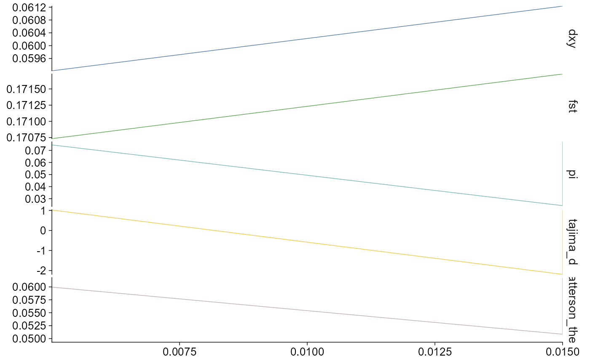
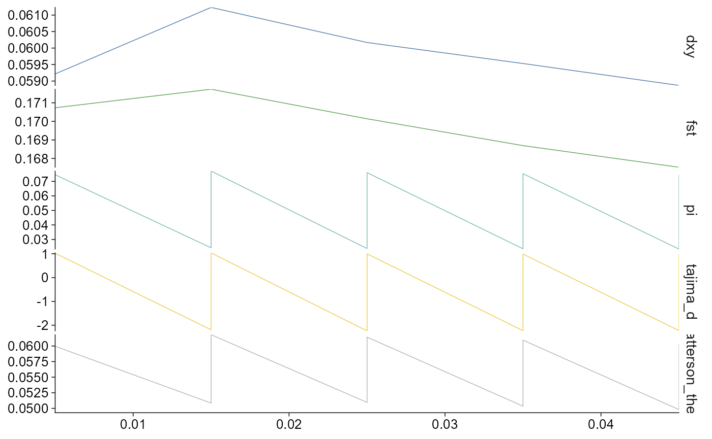
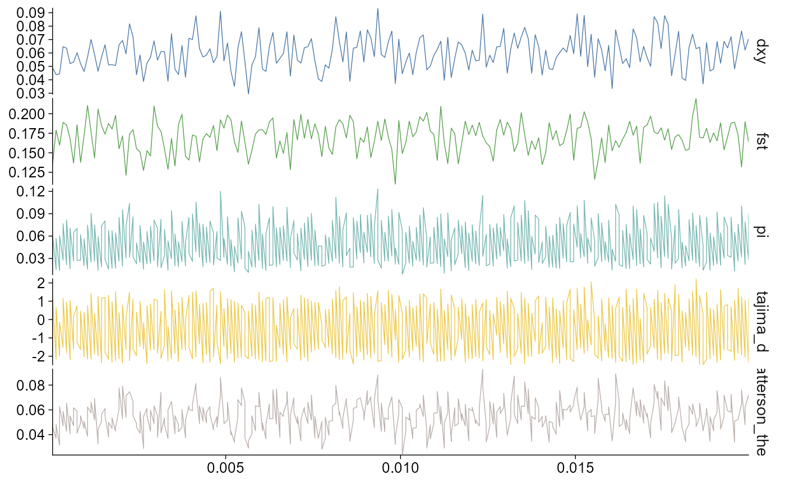
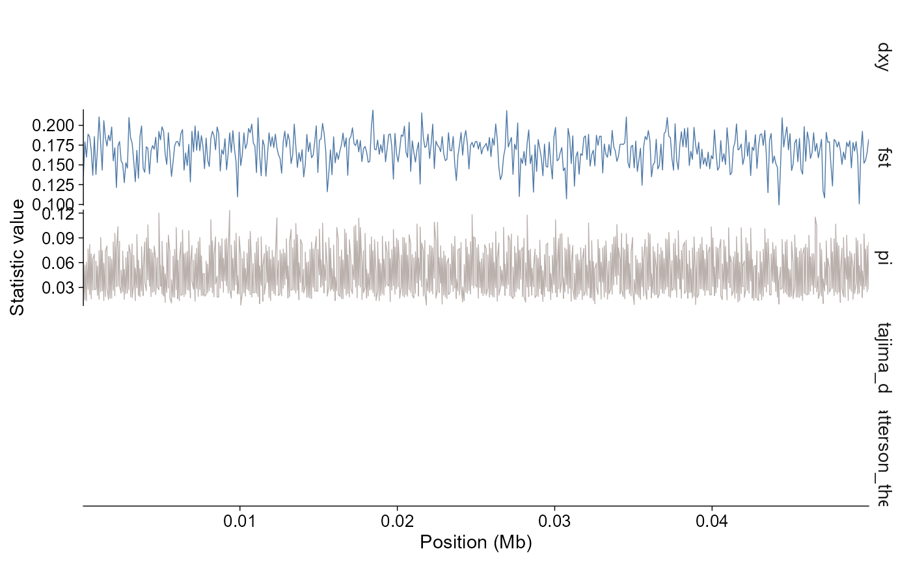

ggpop imports windowed population genomics statistics
into a typed ggpop_stats object. The current module
supports pixy and vcftools-style outputs for common summaries including
FST, pi, Tajima’s D, Dxy, and Watterson’s theta.
API summary
| Task | API | Notes |
|---|---|---|
| Import a result directory | import_stats(dir, type = "pixy") |
Auto-discovers supported suffixes |
| Import selected files | import_stats(dir, pi = "...", fst = "...") |
Relative paths resolve inside dir
|
| Direct plot | plot_stats(data, stat = ..., chr = ...) |
Returns a ggplot object |
| Layered plot | ggpop(data) + geom_stats(...) |
Tidy ggplot extension path |
| Region filter |
chr, start, end
|
Keeps windows overlapping the region |
Import pixy results
The bundled pixy example is a dense chr2L windowed data set. It contains 4,000 tidy rows across five statistics: 500 pairwise Dxy windows, 500 pairwise FST windows, and 1,000 within-population windows each for pi, Tajima’s D, and Watterson’s theta. Windows are 100 bp wide and span positions 1–50,000.
pixy_dir <- ggpop_extdata("Population_genomics_statistics", "pixy")
stats <- import_stats(pixy_dir, type = "pixy")
class(stats)
#> [1] "ggpop_stats" "data.frame"
unique(stats$stat)
#> [1] "dxy" "fst" "pi"
#> [4] "tajima_d" "watterson_theta"
range(stats$start)
#> [1] 1 49901You can also import selected files explicitly:
selected <- import_stats(
pixy_dir,
pi = "pixy_pi.txt",
fst = "pixy_fst.txt",
tajima = "pixy_tajima_d.txt",
type = "pixy"
)
unique(selected$stat)
#> [1] "dxy" "fst" "pi"
#> [4] "tajima_d" "watterson_theta"Import vcftools results
vcftools results use a different column naming convention, but enter
the same typed plotting object. Supported examples include
.windowed.pi, .windowed.weir.fst, and
.Tajima.D files.
vcftools_dir <- ggpop_extdata("Population_genomics_statistics", "vcftools")
vcftools_stats <- import_stats(vcftools_dir, type = "vcftools")
class(vcftools_stats)
#> [1] "ggpop_stats" "data.frame"
unique(vcftools_stats$stat)
#> [1] "tajima_d" "pi" "fst"Explicit file selection works the same way:
vcftools_selected <- import_stats(
vcftools_dir,
pi = "vcftools.windowed.pi",
fst = "vcftools.windowed.weir.fst",
tajima = "vcftools.Tajima.D",
type = "vcftools"
)
unique(vcftools_selected$stat)
#> [1] "tajima_d" "pi" "fst"Plot all statistics
By default, stat = "all" stacks the selected statistics
vertically and keeps the x-axis aligned. This mirrors the usual pixy
plotting layout for comparing windowed summaries across the same genomic
coordinate system. For the bundled example, all panels use chr2L 100 bp
windows across the first 50 kb.
plot_stats(stats, stat = "all", chr = "chr2L")
The same plotting path works for vcftools imports:
plot_stats(vcftools_stats, stat = "all", chr = "chr2L")
Select statistics and regions
Use stat to choose one or more summaries,
chr to select chromosomes, and start /
end to focus on windows overlapping a region.
plot_stats(stats, stat = c("fst", "pi"), chr = "chr2L")
plot_stats(stats, chr = "chr2L", start = 1, end = 20000)
Multiple chromosomes can be selected. When more than one chromosome is shown, the default plot uses points to avoid implying continuous genomic distance between chromosomes. The bundled pixy example contains only chr2L, so the multi-chromosome example below uses the vcftools import if multiple chromosomes are present in user data.
plot_stats(stats, chr = c("chr1", "chr2"))Layered workflow
The layered API follows the same grammar as the other modules:
stats |>
ggpop() +
geom_stats(stat = c("fst", "pi"), chr = "chr2L")
The module uses ggpop’s shared theme, font sizing, and discrete
palette interfaces. Use palette, base_size,
and base_family the same way as the GWAS and PCA
modules.